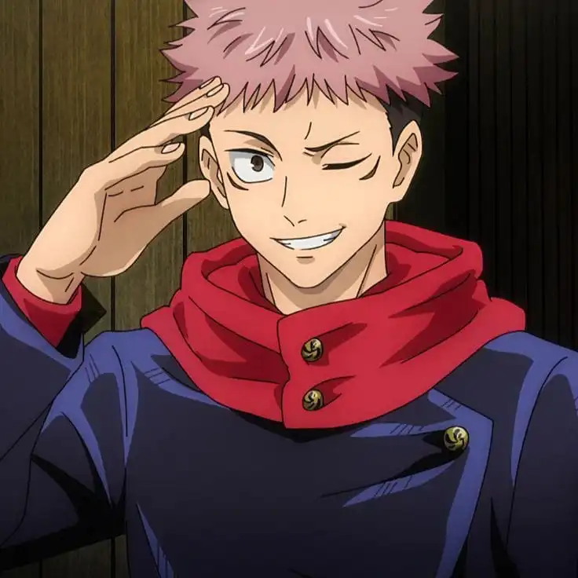
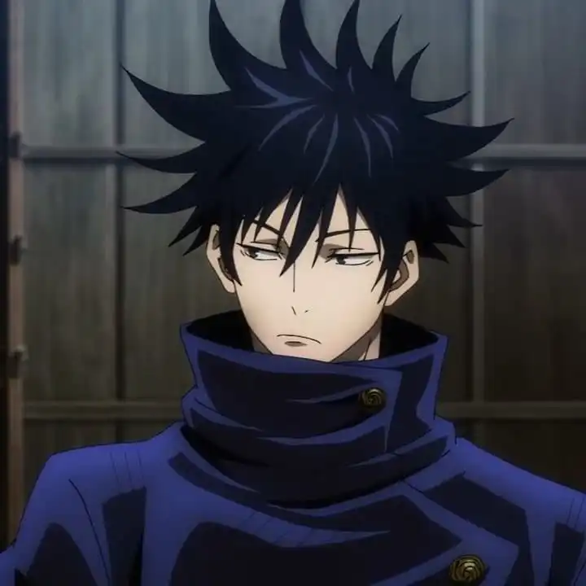
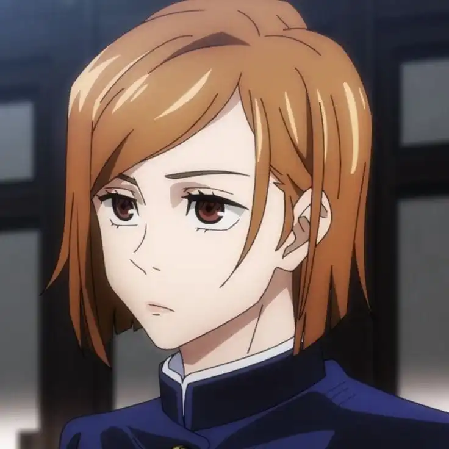
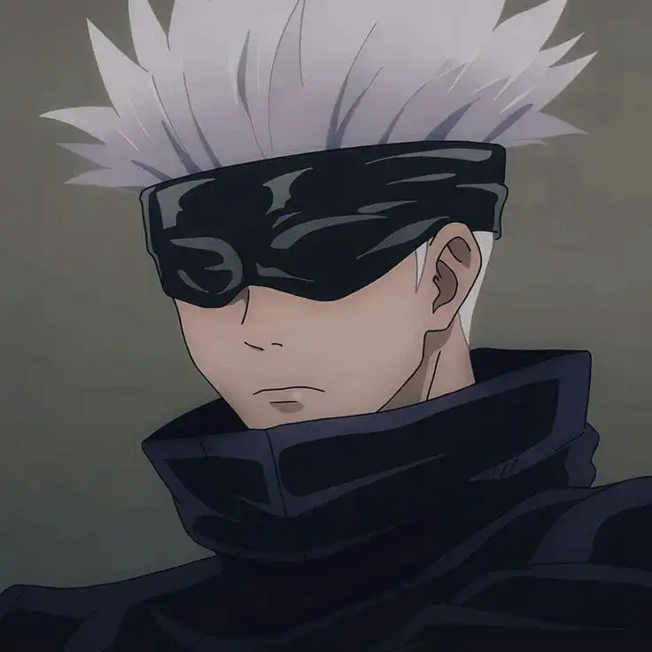

Personajes Principales

- Nombre: Itadori Yuji
- Edad: 16 años
- Altura: 1,73 m
- Afiliación: Estudiante de secundaria en la Escuela Técnica de Magia de Tokio
- Habilidad especial: Posee una gran resistencia y habilidades físicas excepcionales.
- Personalidad: Itadori Yuji es un joven valiente y decidido. Aunque inicialmente parece despreocupado y relajado, su verdadera naturaleza revela una gran compasión y determinación. Es leal a sus amigos y tiene una fuerte ética moral. A pesar de enfrentarse a situaciones aterradoras, demuestra coraje y un deseo inquebrantable de proteger a aquellos a quienes aprecia. Su personalidad equilibrada entre la valentía y la humanidad lo convierte en un personaje carismático y entrañable en Jujutsu Kaisen.

- Nombre: Megumi Fushiguro
- Edad: 15 años
- Altura: 1,73 m
- Afiliación: Estudiante de secundaria en la Escuela Técnica de Magia de Tokio
- Habilidad especial: Maestro en el uso de maldiciones y posee a un poderoso Shikigami llamado Nue.
- Personalidad: Megumi es un individuo serio y reservado. Tiene una naturaleza reflexiva y pragmática, a menudo evaluando las situaciones con calma y cuidado. Aunque puede parecer distante, muestra una gran preocupación por la seguridad de los demás y está dispuesto a arriesgarse para proteger a sus compañeros. Megumi demuestra una destreza excepcional en el uso de las maldiciones y tiene un sentido innato de responsabilidad hacia su deber como exorcista. Su complejidad y determinación agregan profundidad a su personaje en Jujutsu Kaisen.

- Nombre: Nobara Kugisaki
- Edad: 16 años
- Altura: 1,73 m
- Afiliación: Estudiante de secundaria en la Escuela Técnica de Magia de Tokio
- Habilidad especial: Posee una gran resistencia y habilidades físicas excepcionales.
- Personalidad: Nobara es una joven decidida y audaz con una personalidad franca y directa. Su actitud desafiante y su fuerte sentido de independencia la distinguen. Nobara no teme expresar su opinión y luchar por sus convicciones. A pesar de su apariencia despreocupada, demuestra ser leal a sus amigos y está dispuesta a enfrentarse a situaciones peligrosas para proteger a quienes le importan. Su habilidad para desafiar las normas y su valentía la convierten en un personaje vibrante y valioso en el mundo de Jujutsu Kaisen.

- Nombre: Satoru Gojo
- Edad: 28 años
- Altura: 1,90 m
- Afiliación: Maestro y Jefe del Primer Año en la Escuela Técnica de Magia de Tokio
- Habilidad especial: Poseedor de una inmensa cantidad de energía maldita y maestro en el uso de técnicas avanzadas, incluida la Limitless Cursed Technique y Six Eyes.
- Personalidad: Satoru es conocido por su personalidad extrovertida, carismática y despreocupada. A pesar de su comportamiento relajado, demuestra ser uno de los exorcistas más fuertes y hábiles de la serie. Tiene una confianza innegable en sus habilidades, pero también muestra compasión y preocupación genuina por la seguridad de sus estudiantes. Gojo a menudo sorprende con su astucia y sentido del humor, lo que lo convierte en un personaje fascinante y querido en Jujutsu Kaisen. Su misteriosa historia y habilidades extraordinarias agregan una capa adicional de intriga a su personaje.